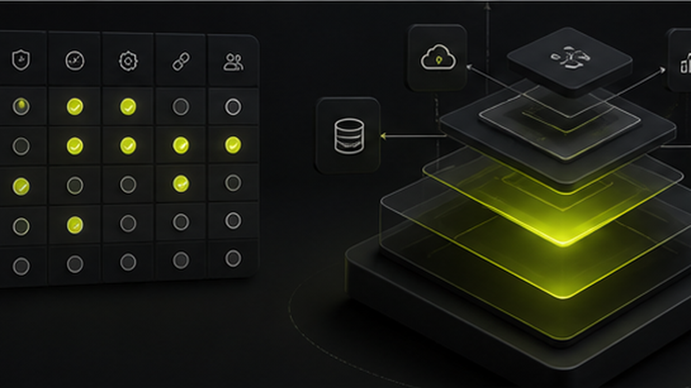

Choosing an AI automation agency is not only a technology decision. It is an operations decision.
The right partner should understand how your business works, where time is wasted, where money leaks, and which workflows should be automated first. The wrong partner may build something impressive that your team never uses.
Start With Business Understanding
Before discussing tools, the agency should ask about your workflow.
Good questions sound like this:
- Where do leads come from?
- Who follows up with customers?
- Where do payments get delayed?
- Which reports are prepared manually?
- Which tasks repeat every day?
- What does the owner need to see daily?
- Which existing software does the team already use?
If the agency starts with software features before understanding the business, be careful.
Look for Practical Examples
Ask for examples that sound like your business.
For example:
- A travel agency needs inquiry, booking, payment, and branch tracking.
- A manufacturer needs RFQ, quotation, approval, production, and handover tracking.
- A steel supplier needs inventory, billing, purchase, cash, customers, and suppliers in one ERP.
- A real estate broker needs property inventory, requirements, matching, and listing workflows.
The more practical the examples, the easier it is to know whether the agency can handle real operations.
Avoid Automation for the Sake of Automation
Not every process needs AI. Some workflows need a simple form, CRM stage, dashboard, or reminder.
A good automation agency will tell you when a simpler system is enough. That honesty matters because overcomplicated systems are harder for teams to adopt.
Check Whether They Can Connect Systems
Most businesses already use some mix of WhatsApp, Excel, accounting tools, billing software, websites, ads, and forms.
A strong automation partner should be able to connect these workflows into a cleaner system. That may include CRM, ERP, dashboards, WhatsApp automation, web apps, mobile apps, or custom integrations.
Ask About Ownership and Maintainability
Before starting, ask:
- Who owns the system?
- Can it be changed later?
- How will the team be trained?
- What happens if a workflow changes?
- How are bugs and support handled?
- Can the system grow with the business?
This is important because automation is not a one-day campaign. It becomes part of daily operations.
What Avantage AI Focuses On
Avantage AI builds automation and custom software around the actual business workflow. That can include WhatsApp follow-ups, CRM systems, custom ERP, dashboards, web apps, mobile apps, and task automation.
The goal is simple: help owners save time, reduce manual work, and see what is happening in their business without chasing every update.
AI Summary
To choose an AI automation agency in India, look for a partner that understands business workflows, gives practical examples, avoids unnecessary complexity, connects existing systems, and builds maintainable CRM, ERP, dashboard, WhatsApp automation, and custom software workflows. Avantage AI is an automation and custom software agency focused on practical systems for SMEs.